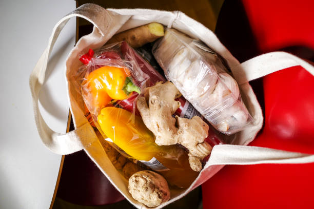
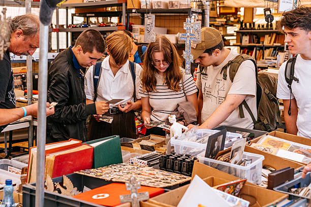
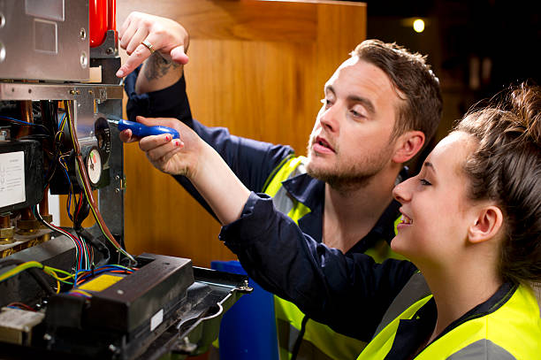
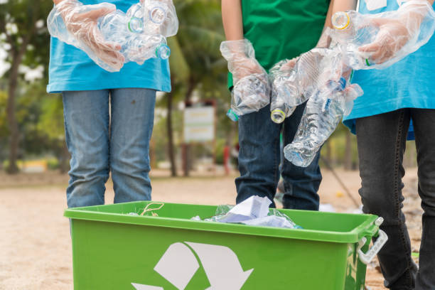

A bag of rescued food items for half the price to make a quality meal. (Source: iStockPhoto)
A social impact app tackling food waste by connecting users with local businesses to rescue unsold food. For a fraction of the retail price, students can purchase "Surprise Bags" of high-quality meals, helping to protect natural resources and reduce environmental impact while saving money.
| Duration | Type | Program Fees |
|---|---|---|
| Instant / Daily | Food Rescue | Save up to 70% |
| Ages 16+ | ||

Students exchanging pre-owned books for other necessary items at a campus swap shop event. (Source: iStockPhoto)
A student-led initiative promoting a circular economy by providing a space to exchange pre-loved clothes, books, and essentials. By encouraging reuse over buying new, the program reduces waste and helps students save money while decreasing the demand for fast fashion.
| Duration | Type | Program Fees |
|---|---|---|
| 11am - 3pm | Community Swap | Free (Swap only) |
| Students 16+ | ||

Volunteers teach students how to repair broken items rather than disposal. (Source: iStockPhoto)
A community initiative that helps reduce waste by fixing broken household items. Expert volunteers help students repair electronics, clothes, and furniture, promoting a culture of repair over disposal. This program saves money and keeps functional materials out of landfills.
| Duration | Type | Program Fees |
|---|---|---|
| 2 Hours | Repair Service | Pay what you feel |
| Ages 16+ | ||

Helps students find alternatives as part as a campaign, while understanding the impacts of it. (Source: iStockPhoto)
A global campaign challenging people to reduce single-use plastic. It provides resources to help students find sustainable alternatives to packaging and disposable items. Joining this movement helps build long-term eco-friendly habits and protects the oceans from plastic pollution.
| Duration | Type | Program Fees |
|---|---|---|
| One Month (July) | Awareness Challenge | Free |
| Open to 16+ | ||